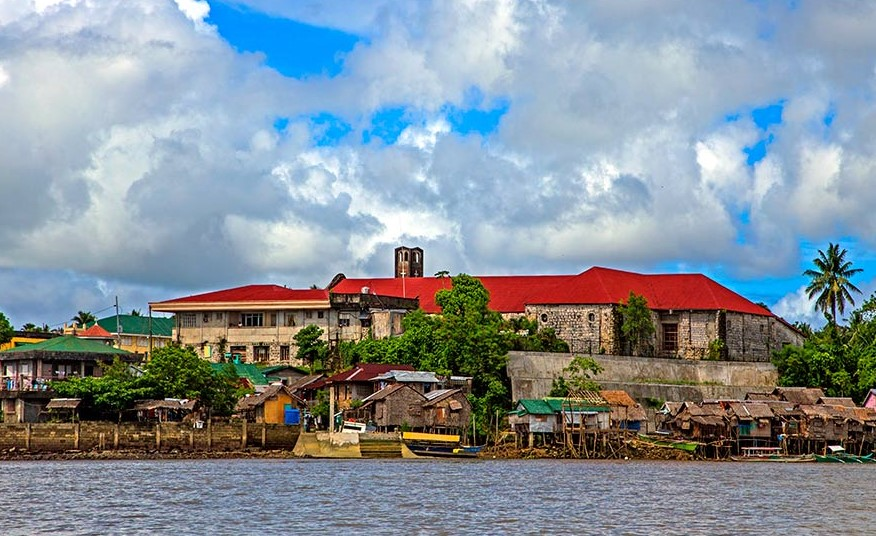

Laoang is one of the oldest town of Northern Samar after Papalpag. It lies on the mouth of the great Catubig River and has a port which in olden times serviced
the northern parts of Samar Island. It holds the disctinction of having a Spanish-built school house although its façade has been smoothened.
Inogkahan or the Grand Canyon is a manmade shortcut pass through the Tumagingting Hill and was excavated in 1913.
St. Michael the Archangel Church is of 18th century architecture.

Laoang is a coastal municipality in the province of Northern Samar. The municipality has a land area of 246.94 square kilometers or 95.34 square miles
which constitutes 6.68% of Northern Samar's total area. Its population as determined by the 2020 Census was 60,607.
This represented 9.48% of the total population of Northern Samar province, or 1.33% of the overall
population of the Eastern Visayas region. Based on these figures, the population density is
computed at 245 inhabitants per square kilometer or 636 inhabitants per square mile.